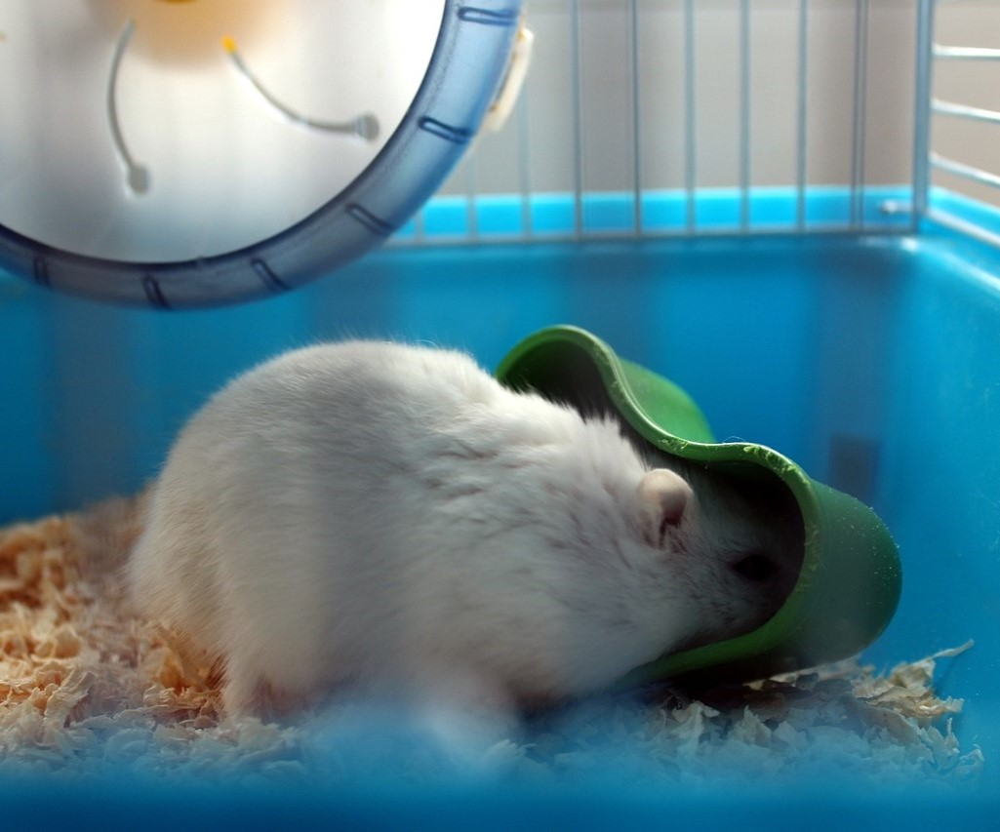
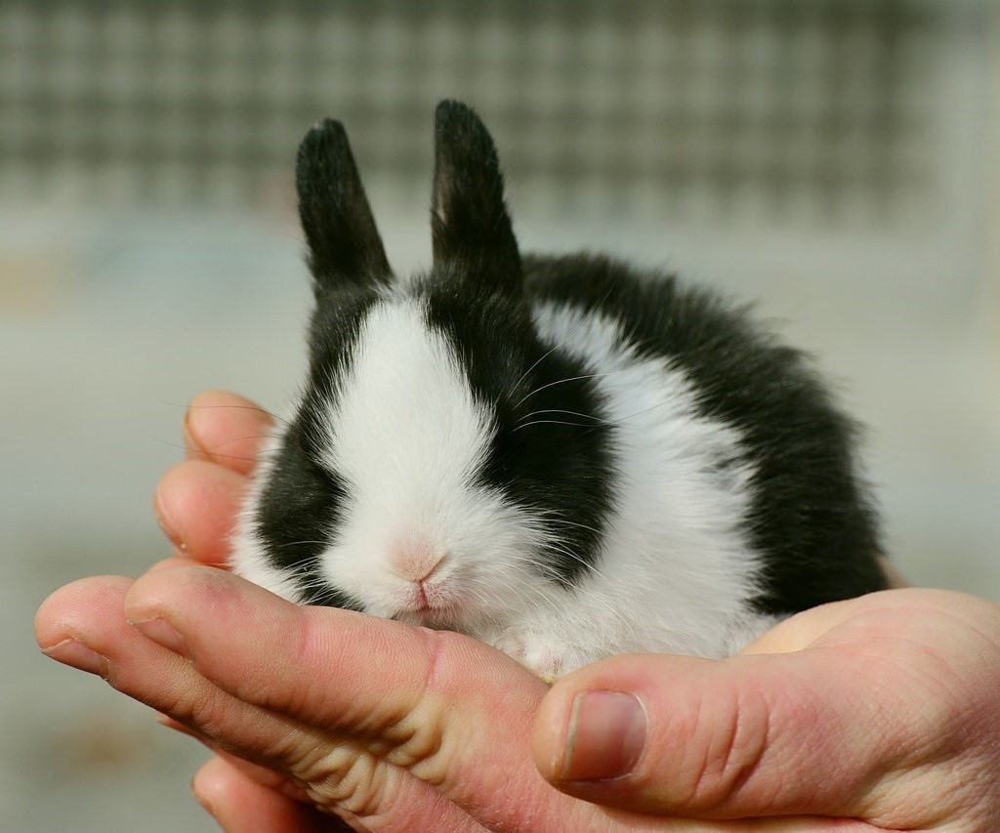
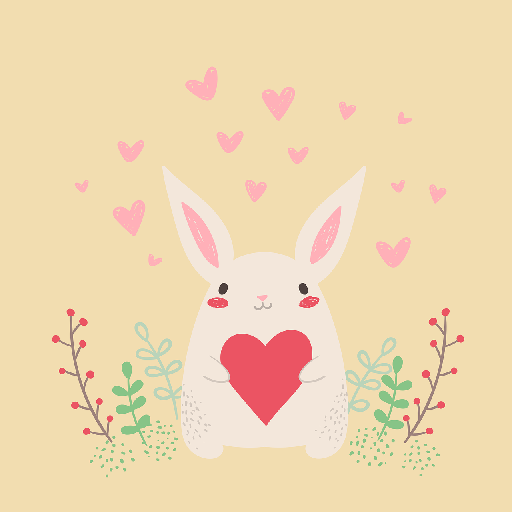

로그인
회원가입
Bestie
동물알기
강아지 소개
고양이 소개
그 외 소개
소통공간
전체 공간
강아지 공간
고양이 공간
그 외 공간
홍보
입양
절차 안내
보호 동물
소통 공간
반려동물과의 추억을 공유하세요.
그 외를 위한 공간

햄이
@ham_ham
맛있니...?
#햄스터 #먹방 #맛점
글 보러가기


토옥이
@_tooo
아기 토끼 줍줍
#토끼 #아기토끼 #입양
글 보러가기
이미지 저작권:
Pixabay
친구들 반려동물 사진
참고 사이트:
서울 동물 복지 지원 센터 (https://animal.seoul.go.kr/index)
동물 자유 연대 (https://animals.or.kr/center/adopt)
국립 축산 과학원 (https://www.nias.go.kr/companion/index.do)
용인 특례시 동물 보호 센터 (https://www.yongin.go.kr/pet/index.do)